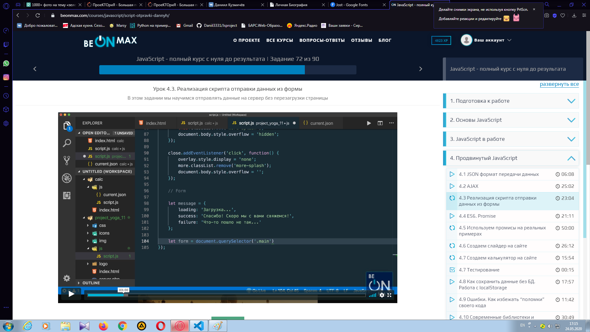
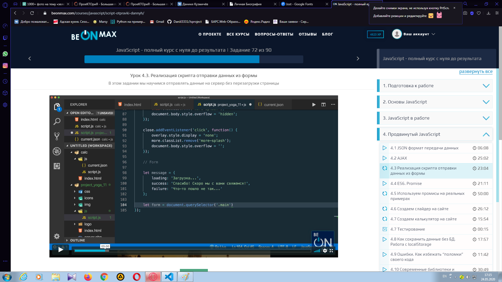
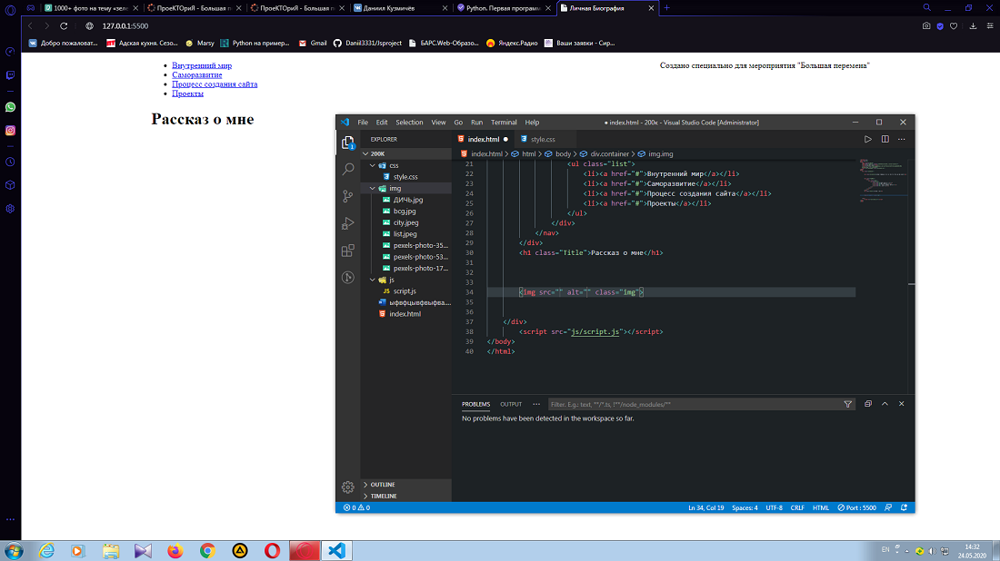
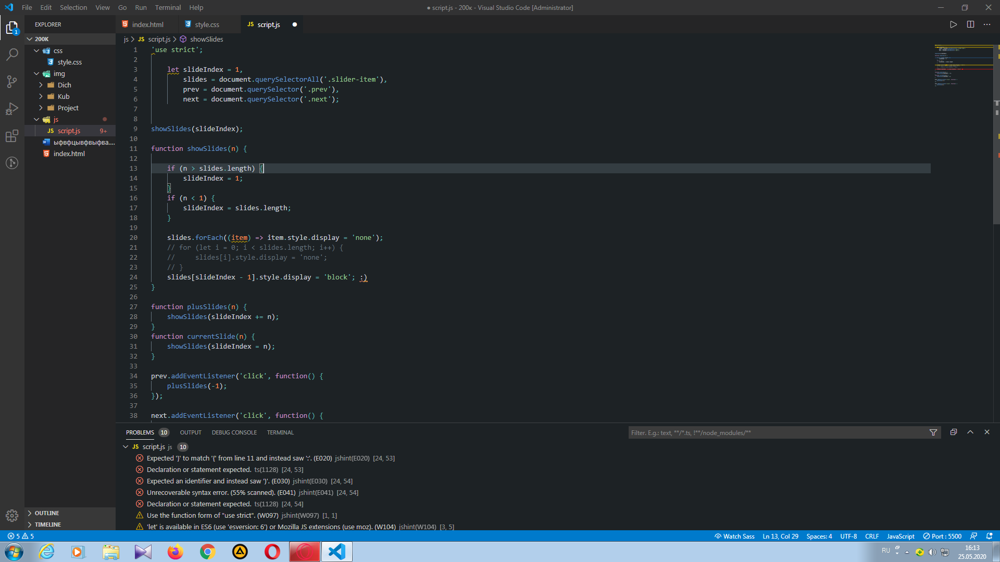
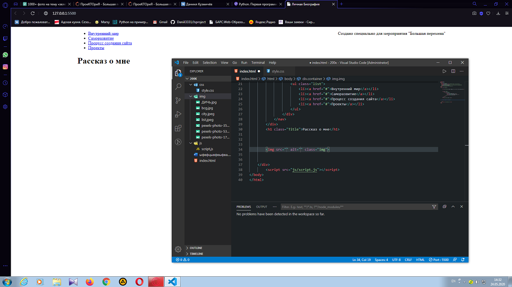
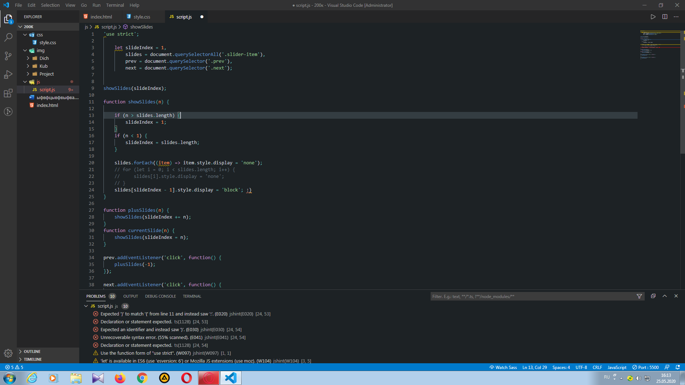

Саморазвитие
Я считаю, что каждый подросток должен усиленно заниматься саморазвитием. Почему? Чтобы лучше подготовиться к взрослой жизни. Я уверен, что когда она наступит, будет совсем все плохо без хоть малейшой подготовки, да и без развития жить скучно(мое мнение). Теперь я расскажу, как я иду вперед и развиваюсь.
1. Логические задачи - я пытаюсь решать логические задачи из интернета каждый день. Если не могу решить, то смотрю ответ и запоминаю ЛОГИКУ решения задачи, а не ответ. Так нахожу интересные задачи на платформе YouTube.
2. Решение устно алгебраических примеров - я желаю повысить свою скорость мышления, если речь о цифрах. Я нахожу или придумываю числовые примеры и решаю их "в голове".
3. Память - я также ищу в интернете задачи на запоминание чего-либо и решаю их. Память очень важная часть человека и я хочу ее развить до бескрайних бределов.
4. Часто играю в игры, где нужно дать правильный ответ на вопрос, который может быть каким угодно и о чем угодно. Такие игры расширяют кругозор.
5. Обучение БУДУЩЕЙ ПРОФЕССИИ - я учусь на онлайн курсах создавать сайты при использовании HTML - разметки и языка программирования JavaScript.(Я делаю это на платформе beonmax). Когда пройду курс по Js, пойду изучать WordPress(ускоренное создание сайтов с использованием готовых шаблонов). Затем Python и C++. Я веду большую тетрадь по программированию. Зачем это? Я хочу зарабатывать деньги на фрилансе, создавая сайты или выполняя задачи связанные с ними. Чтобы потом я смог себя содержать, так как я собираюсь уезжать в Ростов-на-Дону(Я должен поступить на бюджет в университет по IT)
Я живу в Зернограде, не далеко от Ростова.

1. Логические задачи - я пытаюсь решать логические задачи из интернета каждый день. Если не могу решить, то смотрю ответ и запоминаю ЛОГИКУ решения задачи, а не ответ. Так нахожу интересные задачи на платформе YouTube.
2. Решение устно алгебраических примеров - я желаю повысить свою скорость мышления, если речь о цифрах. Я нахожу или придумываю числовые примеры и решаю их "в голове".
3. Память - я также ищу в интернете задачи на запоминание чего-либо и решаю их. Память очень важная часть человека и я хочу ее развить до бескрайних бределов.
4. Часто играю в игры, где нужно дать правильный ответ на вопрос, который может быть каким угодно и о чем угодно. Такие игры расширяют кругозор.
5. Обучение БУДУЩЕЙ ПРОФЕССИИ - я учусь на онлайн курсах создавать сайты при использовании HTML - разметки и языка программирования JavaScript.(Я делаю это на платформе beonmax). Когда пройду курс по Js, пойду изучать WordPress(ускоренное создание сайтов с использованием готовых шаблонов). Затем Python и C++. Я веду большую тетрадь по программированию. Зачем это? Я хочу зарабатывать деньги на фрилансе, создавая сайты или выполняя задачи связанные с ними. Чтобы потом я смог себя содержать, так как я собираюсь уезжать в Ростов-на-Дону(Я должен поступить на бюджет в университет по IT)
Я живу в Зернограде, не далеко от Ростова.

Любовь к головоломкам
Как вы уже поняли, я люблю головоломки. Сейчас я расскажу об одной из любимых. Кубик-рубика. Собираю их с 2017 года. Я даже смог пол класса привлечь(они купили кубики-рубика и крутили их вместе со мной). Было только 2 человека в классе, кто умел их собирать полностью. Я и Дима. Мой рекорд по скорости сборки - 45 секунд. Средний результат - 80 сек. В данном слайдере буду показаны головоломки которые у меня имеются и которые я умею собирать. (Не обращайте внимание на недособранный большой куб, просто не дособрал :))
Собирать данные кубики - одно удовольствие. Теперь я покажу видео, где я собираю один из них. ПРОШУ ПРОЩЕНИЯ за ужасное качество видео и фото(камера на телефоне не лучшая), да и съемочных навыков не имею.
Проект
У меня нету глобальных проектов, или же нету таких проектов, которые я могу считать такими. В сфере ВЕБ-программирования создание сайта считается вполне таким себе проектом, ведь ты создаешь что-то свое, НОВОЕ, а главное делаешь это абсолютно с НУЛЯ. Так что я решил представить вам ДАННЫЙ сайт как ПРОЕКТ. Чуть ниже я попробую показать вам как я его создавал и сколько на это ушло времени.
Первые 2 дня я придумывал что вообще поместить на САЙТ. Было всего 3 варианта струкртуры сайта, которые все были откинуты, так как ко мне в голову пришла идея создать именно таким образом. Затем по-немногу начал соответственнго его создавать. 
Нужно было создать слайдер :)

Далее я снял видео, выложил на Youtube и засунул сюда. Далее просто текст и фотографии, так что сложностей не было. Также я очень дорожу внешним видом сайта, что как видите в данном случае не совсем так. Я не изучал еще дизайнерское дело, так что как получилось, так получилось. Главное что все понятно и не режет глаза(мое мнение, каким должен быть сайт, если уж не красивым). Далее нужно его выложить в общий доступ, тоесть на хостинг. У меня есть еще 3 сайта, красивых и с более большим функционалом, но они были выполнены с макета(веб-дизайнер делает макет, а ты реализовываешь картинку в реальность). Они были выполнены в ходе обучения.
Первые 2 дня я придумывал что вообще поместить на САЙТ. Было всего 3 варианта струкртуры сайта, которые все были откинуты, так как ко мне в голову пришла идея создать именно таким образом. Затем по-немногу начал соответственнго его создавать. 
Нужно было создать слайдер :)

Далее я снял видео, выложил на Youtube и засунул сюда. Далее просто текст и фотографии, так что сложностей не было. Также я очень дорожу внешним видом сайта, что как видите в данном случае не совсем так. Я не изучал еще дизайнерское дело, так что как получилось, так получилось. Главное что все понятно и не режет глаза(мое мнение, каким должен быть сайт, если уж не красивым). Далее нужно его выложить в общий доступ, тоесть на хостинг. У меня есть еще 3 сайта, красивых и с более большим функционалом, но они были выполнены с макета(веб-дизайнер делает макет, а ты реализовываешь картинку в реальность). Они были выполнены в ходе обучения.
Краткое понятие о том, кто я
Я живу в маленьком городке Зерноград. Моя мама работает уборщицой(так сложилась жизненная ситуация(это самый лучший человек в мире)) и любит шить новые платья, как на заказ, так и себе, старший брат строителем(могу рискнуть и сказать, что он профи в этом), но я совсем не имею отношения к професии строитель. Старшая сестра работает в кафе официанткой(имеет невероятно хороших друзей, думаю по жизни больше ничего и не нужно, кроме любви). Мой дядя работает охранником, живет в Каменксе Шахтийском. Живем не богато, в доме. Если честно, я сам имею очень мало друзей, не знаю с чем это связано(наверное дело во мне).
На этом все. Надеюсь вам понравилось =) (Ниже фотография моего дома)